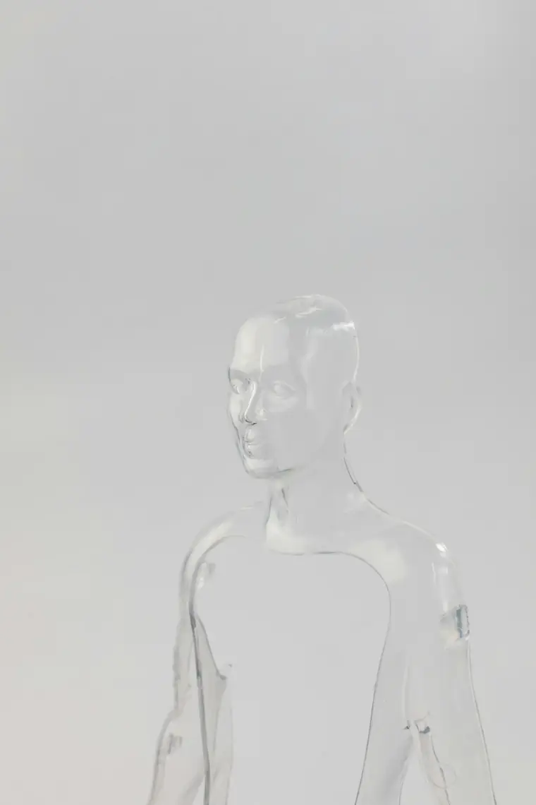

Proyectos / 02 — Tech
Gabinete — IA

La IA me ha ayudado a potenciar mis decisiones, mis ideas. He alcanzado mejores versiones de quien ya era.
De aquí ha salido trabajo concreto, y lo he cerrado yo: esta web, el estudio, el currículum, una hoja de ruta y el gabinete que lo sostiene.

Diseñé el gabinete contra la generalidad: una infraestructura con memoria, no una ventana que se olvida al cerrarse.
No es una sola voz. Es una red de oficios — estrategia, derecho, datos, mercado, inglés, arquitectura, voz. Cada uno tiene una instrucción propia, escrita y guardada, no improvisada en el hilo.
Si no nombro a nadie, responde quien dirige. Reparte, reúne y cierra. Yo decido. Una instrucción mía anula cualquier protocolo.
Un proceso que se repite deja de vivir en mi cabeza y pasa a tener nombre. Se ejecuta igual la segunda vez que la primera. Lo que se decide queda fechado, y la siguiente vez se lee en un orden fijo, antes de opinar. Por eso no empieza de cero.
La palabra, el criterio y la dirección son míos.
Lo que ha salido
Esta web, adrianvalencia.es, tiene dos caras: una profesional y esta, Cara B. Las dos están diseñadas, construidas y mantenidas con el gabinete. Cada cambio sigue el mismo camino: un encargo, una especificación, una vista previa y mi visto bueno. Sin ese paso no se publica nada.
El perfil de LinkedIn lo he supervisado y asesorado de forma creativa. En octubre de 2026 el perfil, esta web y la marca personal quedaron alineados.
El currículum se ha reescrito y optimizado con el gabinete.
Durante el Grado en Relaciones Laborales y Recursos Humanos, en la Universidad de Sevilla, apliqué agentes de IA al estudio. El resultado fue un sobresaliente en diversas asignaturas. Terminé el grado con todas las asignaturas aprobadas.
Sigo rutas de aprendizaje propias, apuntadas con fecha y motivo. Una, todavía en curso, es Python aplicada a recursos humanos y People Analytics. Otra es la preparación del APTIS C1. En abril de 2026 adopté un método de ocho pilares para escribir y auditar instrucciones.

Hay diecisiete decisiones registradas, cada una con fecha y motivo: qué estudiar, qué priorizar y hacia dónde ir. Las primeras, del 12 de octubre de 2025, fijaron que yo sigo siendo el experto humano final, y que muchas credenciales no se lean como acumulación de títulos: cuenta la evidencia de impacto. Ocho están cerradas; nueve siguen abiertas.
Hay rutinas que corren solas: siguen lo que se mueve en el sector y ordenan cada día el correo y la agenda. A día de hoy siguen activas. El sistema trabaja cuando cierro la ventana.
Monté el gabinete: quince figuras con instrucción escrita — nueve en uso, dos a prueba y cuatro aparcadas a propósito —. Cuarenta y nueve métodos escritos. Sesenta y seis roles, elegidos entre 771 archivos de 14 repositorios, 691 únicos al quitar duplicados. Un rol solo sale de la biblioteca si se usa, y ese paso lo apruebo yo. Seis protocolos compartidos. Nada irreversible sale sin mi visto bueno.
- 15 figurasNueve en uso, dos a prueba, cuatro aparcadas.
- 49 métodosProcedimientos escritos.
- 66 rolesDe 771 archivos, 14 repositorios, 691 únicos.
- 17 decisionesOcho cerradas, nueve todavía abiertas.

Sigo haciendo el trabajo que ya sabía hacer. Cada pieza deja un registro, y la siguiente arranca desde ahí.